StorySwitch est une plateforme pour créer et regarder des films interactifs, où le spectateur influence l'histoire en faisant des choix.
Vous pouvez importer vos vidéos, les organiser en séquences liées entre elles, et proposer différents chemins selon les choix du spectateur.
Dans le Lecteur, il suffit de suivre le film et de sélectionner les options proposées pour avancer dans l'histoire.
Maintenez la Barre Espace enfoncée et glissez la souris (clic gauche), ou utilisez le clic de la molette de la souris.
Utilisez la molette de la souris. Le niveau de zoom actuel est affiché en bas à droite (ex: 100%).
Faites un clic droit n'importe où sur le fond et choisissez "Recentrer Vue".
C'est un aperçu global de votre projet. Le cadre bleu représente ce que vous voyez actuellement à l'écran. Vous pouvez désactiver cette vue dans les Paramètres (rouage).
Cliquez sur le bouton "+ Scène" en haut, ou faites un Clic Droit sur le fond et choisissez "Ajouter Scène".
Bouton "+ Scène" en haut :
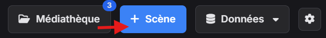Bouton avec clic droit :
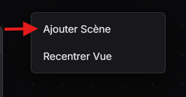Double-cliquez sur le titre de la boîte (en haut du nœud) ou faites un clic droit sur le nœud et choisissez "Renommer".
Dans la boîte de la scène
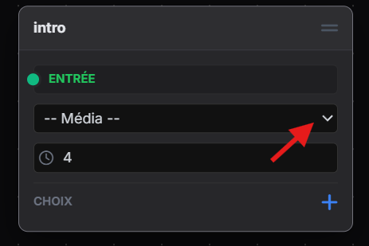utilisez le menu déroulant pour choisir une vidéo parmi celles présentes dans la Médiathèque.
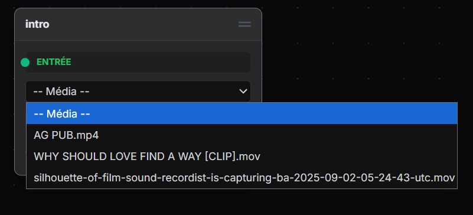C'est la durée (en secondes) avant que l'action par défaut ne se déclenche si l'utilisateur ne clique rien.
Faites un clic droit sur la scène et choisissez "Dupliquer", ou sélectionnez-la et faites Ctrl + C puis Ctrl + V.
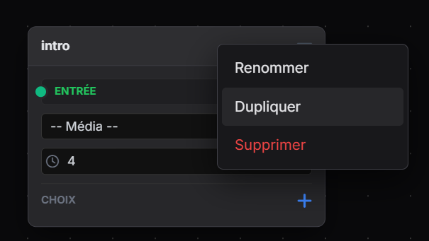Dans une scène, cliquez sur le petit "+" bleu à côté de "CHOIX". Vous pouvez ajouter jusqu'à 4 choix maximum.
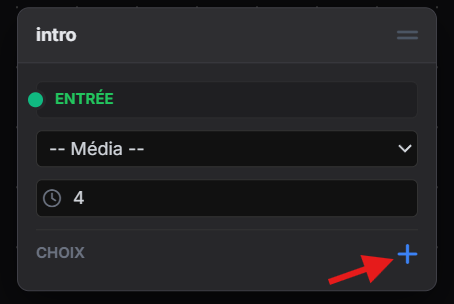 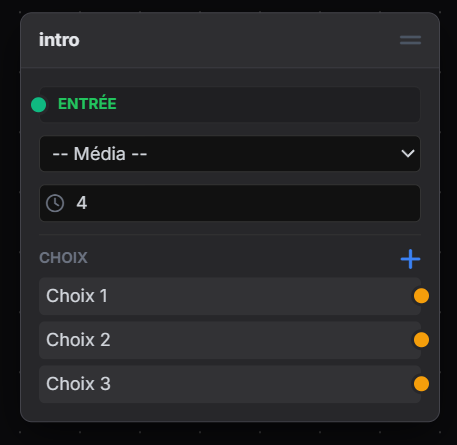Cliquez sur le rond coloré à droite d'un choix (sortie) et maintenez le clic jusqu'au rond vert "Entrée" de la scène suivante.
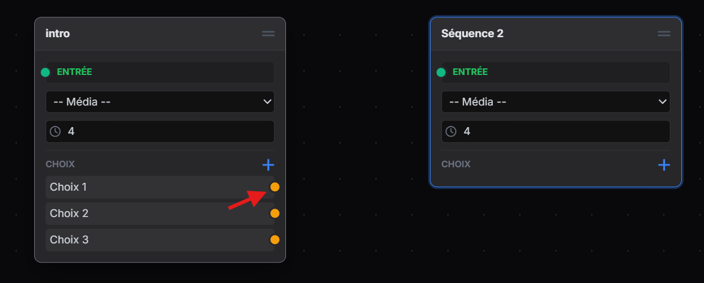 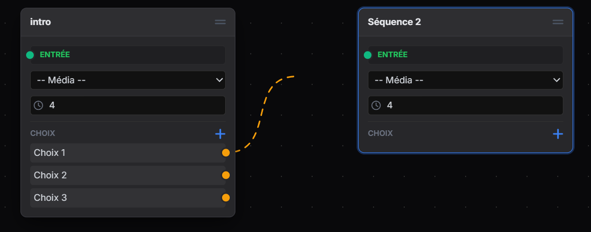 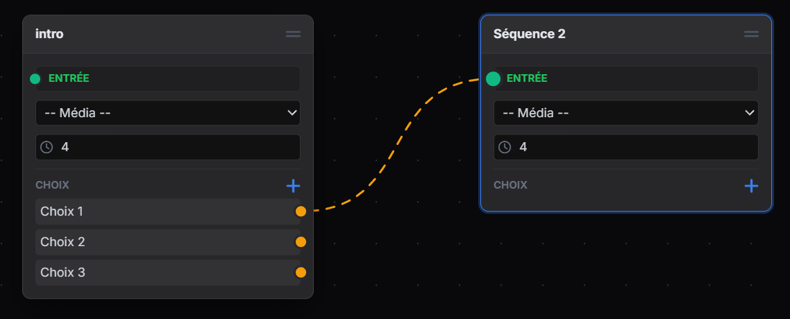Cliquez directement sur le câble (il devient plus épais au survol). Une confirmation vous sera demandée.
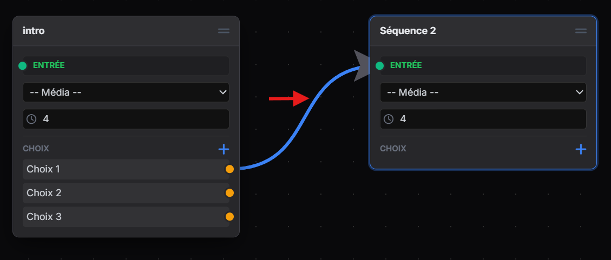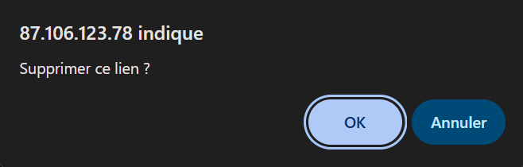
Oui ! Tirez un câble depuis une sortie (rond orange/jaune) et relâchez-le dans le vide. Un menu apparaîtra pour créer une "Scène liée" instantanément.
Cliquez sur le bouton "Médiathèque". Vous pouvez soit cliquer sur "Ajouter des vidéos", soit glisser-déposer vos fichiers vidéo directement dans la fenêtre depuis votre ordinateur.
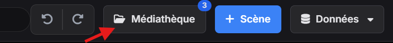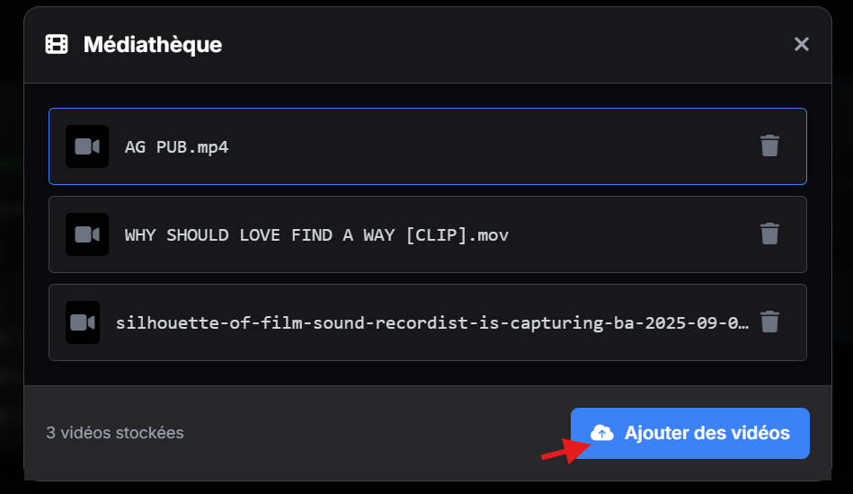
(À préciser selon ton serveur, mais ton input HTML dit accept="video/*"). Généralement MP4 ou WebM.
Dans la Médiathèque, cliquez sur l'icône "Poubelle" à côté du nom du fichier. Attention : cela la supprime pour tout le monde.
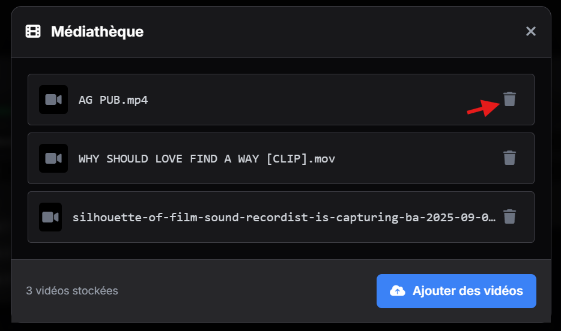Cliquez sur le bouton violet "Sauvegarder". Donnez un nom à votre fichier .json (ex: projet_v1.json) et confirmez..
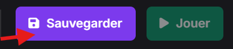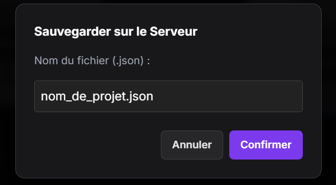
Allez dans le menu "Données" > "Importer / Charger". Sélectionnez votre fichier dans la liste déroulante "Charger depuis le serveur".
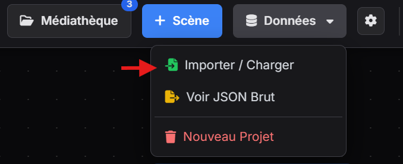Oui, une fois le projet sauvegardé, le bouton vert "Jouer" en haut à droite s'active. Il ouvre le lecteur dans un nouvel onglet.
Dans le menu "Données", cliquez sur "Voir JSON Brut", puis "Copier". Vous pouvez coller ce texte dans un fichier texte sur votre ordinateur pour le conserver.
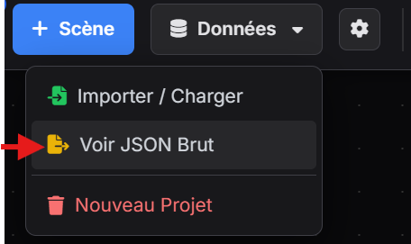 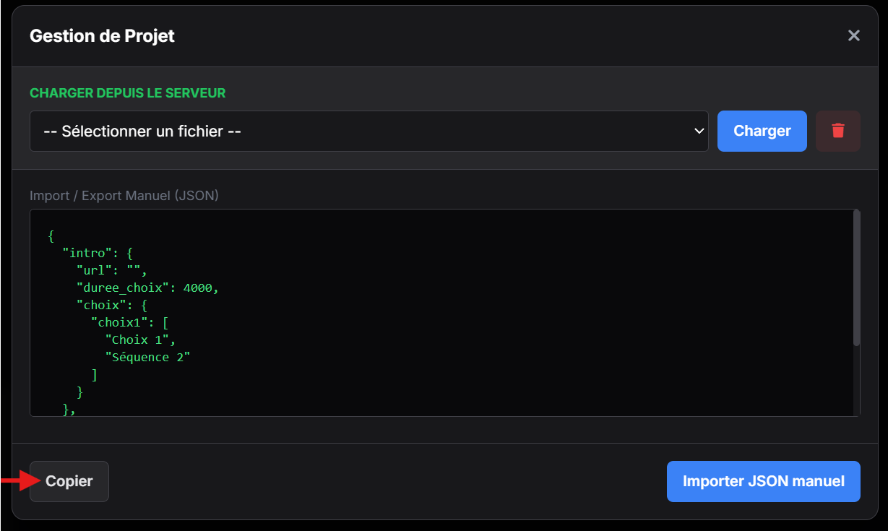| Action | Raccourcis |
|---|---|
| Annuler (Undo) | Ctrl + Z |
| Rétablir (Redo) | Ctrl + Y |
| Copier Scène(s) | Ctrl + C |
| Coller Scène(s) | Ctrl + V |
| Supprimer sélection | Touche Suppr (Delete) |
| Sélection multiple | Shift + Clic ou Shift + Glisser (cadre de sélection) |
| Panoramique (Pan) | Espace + Clic Gauche |
| Mode "Grille" | Magnétisme activé par défaut (Snap), désactivable dans les paramètres |
Vous avez ouvert le fichier directement (file://). Vous devez passer par votre serveur local (ex: Laragon/Wamp) via une adresse type http://localhost/....
Vous devez d'abord Sauvegarder le projet sur le serveur pour générer le lien de lecture.
Vous pouvez changer le style des lignes (Courbe de Bézier ou Droite) dans le menu Paramètres (icône roue dentée).